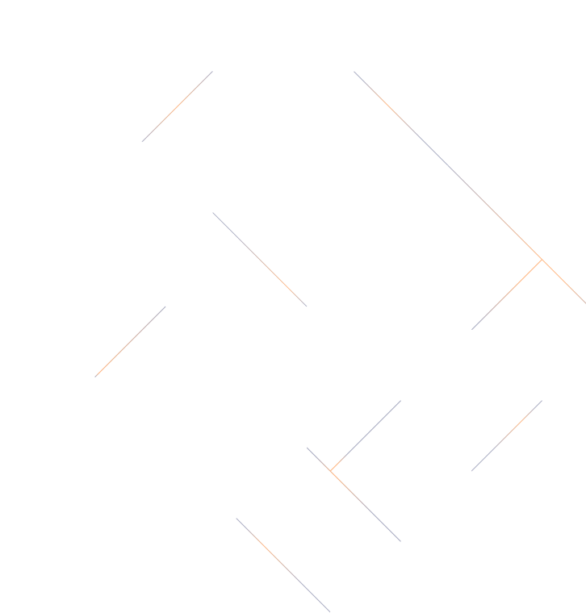

About me
Hi there, My name is Anatolii, I am a front end student of SHKM in Ivano-Frankivsk. In the future I wish to become a full time html, css programmer. My path in programming started back in 2020 when I was 9 years old, And after I created my firstactual project, I started enjoying doing this.
#1. White-Tailed Deer
- Adults range from 63 to 87 inches long and stand between 31 and 39 inches tall at the shoulder.
- Their coloring is tan or brown during the summer and grayish in winter, with white on the throat, chest, and underside of the tail.
- The males have antlers which they shed in the winter.
#1. White-Tailed Deer
- Adults are 16.6 – 21.6 inches (42 – 55 cm) long.
- Their coloring is gray-brown on the back and sides, with a white belly.
- This species has an extremely bushy tail, pointed ears, and a narrow face.
#4. Raccoon
- Adults are about 3 feet long and weigh between 15 and 40 pounds, though some males grow to over 60 pounds.
- Their fur is grayish-brown with 4 to 6 black rings on the tail and a black “mask” marking around the eyes.
- They have bushy tails and paws with five long, finger-like toes
#4. Raccoon
- Adults range in length from 3 to 4.5 feet and weigh between 15 and 44 pounds.
- Their coloring is grayish to yellow-brown on top with white underparts.
- They have a bushy tail, large, triangular ears, narrow muzzle, black nose, and yellow eyes.